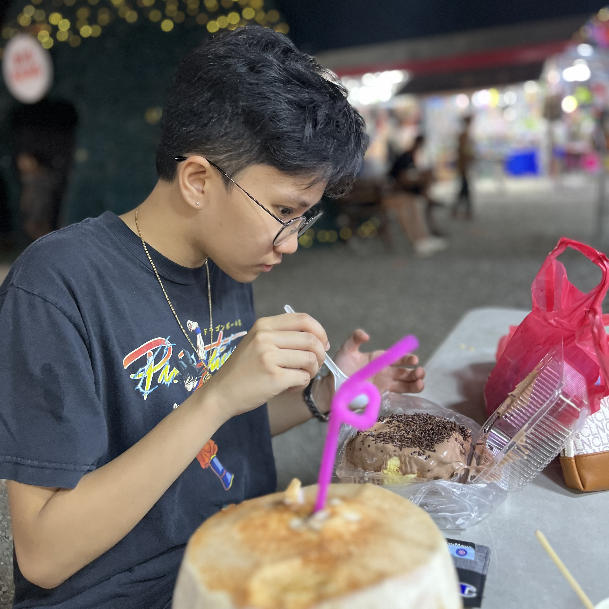

Campo Tres Villa
About the developer

A (slightly) dedicated third-year computer engineering student at Mapua Malayan Colleges Mindanao, passionate about all things tech. I find solace in the world of video games, where I explore virtual realms and challenge my problem-solving skills. Home is where my heart is, as I cherish the comfort and tranquility it offers, providing the perfect backdrop for my studies and gaming adventures. In this ever-evolving digital landscape, constantly honing skills and knowledge to become a proficient engineer who can shape the future of technology.
Contact Details
Purok 3 Campo Kapatagan,
Digos, Philippines
Cell. no: +639273194525
Email address: campotresvilla@gmail.com
Facebook Page: